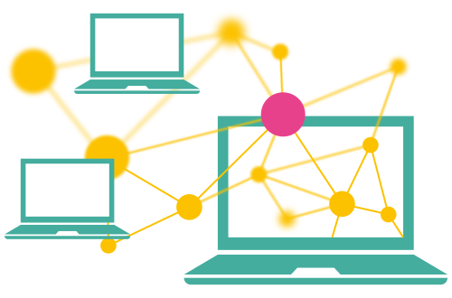
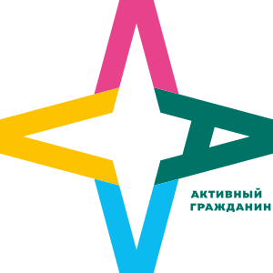
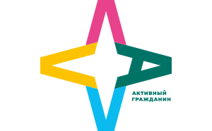
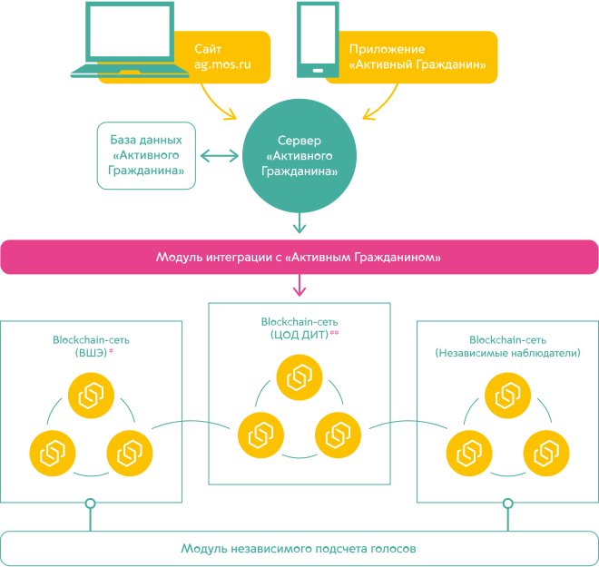
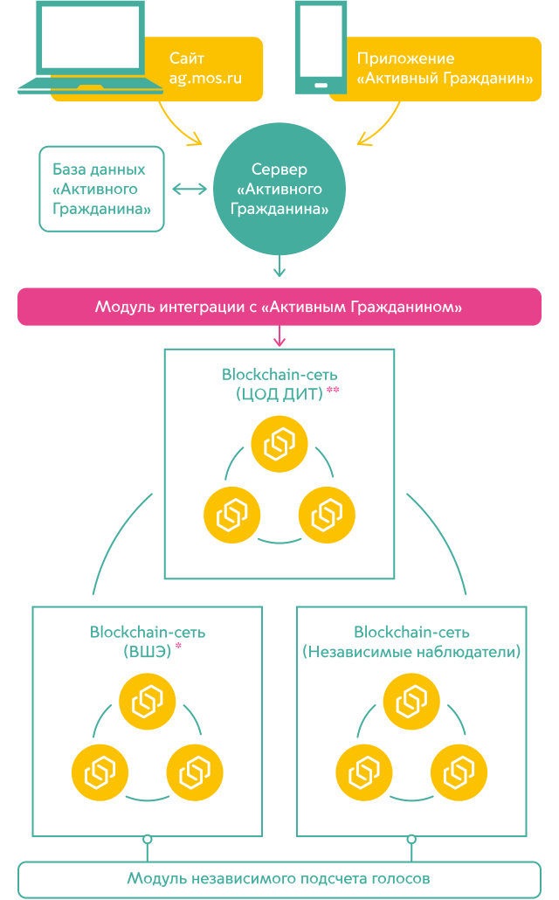

«Активный Гражданин»
на блокчейне
на блокчейне
Использование технологии блокчейн повышает уровень доверия к голосованиям и гарантирует её неизменность, так как любой желающий теперь может следить за ходом голосования, став участником сети блокчейн.
«Активный Гражданин»
на блокчейне
на блокчейне
Использование технологии блокчейн повышает уровень доверия к голосованиям и гарантирует её неизменность, так как любой желающий теперь может следить за ходом голосования, став участником сети блокчейн.

Блокчейн — технология распределенных баз данных или цепочка блоков. Если информация помещена в цепочку блоков однажды, то она не может быть изменена или удалена. Данные хранятся децентрализованно — не на одном сервере, а на всех компьютерах участников сети. Чем больше пользователей в сети блокчейн, тем надежнее и качественнее работа системы.
Подробнее о технологии
Подробнее о технологии
Проект «Активный гражданин» — площадка для проведения открытых референдумов в электронной форме, созданная по инициативе Правительства Москвы в 2014 году. Проект позволяет проводить общегородские и локальные голосования по широкому спектру тем. По количеству активных пользователей (1,98 млн. человек) и объему вопросов (проведено более 2700 голосований), которые выносятся на решение горожан, проект является уникальным в мире и отмечен несколькими престижными наградами, в том числе Smart Cities Awards-2015.
Подробнее о проекте
Подробнее о проекте


Проект «Активный гражданин» — площадка для проведения открытых референдумов в электронной форме, созданная по инициативе Правительства Москвы в 2014 году. Проект позволяет проводить общегородские и локальные голосования по широкому спектру тем. По количеству активных пользователей (1,98 млн. человек) и объему вопросов (проведено более 2700 голосований), которые выносятся на решение горожан, проект является уникальным в мире и отмечен несколькими престижными наградами, в том числе Smart Cities Awards-2015.
Подробнее о проекте
Подробнее о проекте
Какие это дает возможности?
Можно следить за ходом голосования
Любой желающий, установив специальную программу, может стать участником сети блокчейн. Это позволит видеть в реальном времени неизменность вопросов и появление новых голосов
Функциональность для аудиторов
Блокчейн позволяет стать участником сети не только жителю, но и организации. Например, сейчас одним из узлов сети является НИУ «Высшая школа экономики»
Открытость всех данных
В блокчейне можно проверить хронологию появления голосов и подтвердить их уникальность. Можно посмотреть распределение голосов по вопросам и посмотреть на голоса реальных людей (при этом персональные данные зашифрованы)
Дополнительный контроль
Один из принципов технологии блокчейн в том, что чем больше становится участников сети блокчейн, тем выше доверие к хранимым в системе данным. Блокчейн даёт возможность контролировать все голосования в Активном гражданине
Как это работает?
Пользователь устанавливает на своем персональном компьютере дистрибутив программы для создания узла блокчейн-сети и начинает получать голоса с сайта «Активный гражданин» в режиме реального времени.
При необходимости провести подсчет голосов, пользователь запускает программу для подсчета голосов и производит аудит результатов голосования.
При необходимости провести подсчет голосов, пользователь запускает программу для подсчета голосов и производит аудит результатов голосования.


* Высшая школа экономики
** Центр обработки данных Департамента информационных технологий
** Центр обработки данных Департамента информационных технологий
Нода (англ. Node) — узел сети блокчейн, состоящий из одного или нескольких компьютеров, и являющийся минимальной и неделимой единицей блокчейн-сети.
Запись данных в блокчейн осуществляется в 3 простых шага:
Голосование происходит на сайте «Активный гражданин» или в мобильном приложении проекта по стандартной схеме.
После участия в голосовании, результат записывается в блокчейн.
Все голоса также дублируются на компьютеры независимых наблюдателей в режиме реального времени.
Как самостоятельно следить за ходом любого голосования?
Если вы хотите стать одним из участников системы и хранить у себя зашифрованную и достоверную копию всех голосов в «Активном гражданине», а также иметь возможность в режиме реального времени проверить наличие и неизменность своего или любого другого голоса (без указания персональных данных), то надо сделать 3 действия:
1. Скачать инструкцию по установке
2. Установить программу на компьютер
3. Следить за записью голосов онлайн
1. Скачать инструкцию по установке
2. Установить программу на компьютер
3. Следить за записью голосов онлайн
По окончании голосования каждый владелец независимого узла может осуществить проверку результатов голосования (даже в режиме офлайн!) и сравнить результаты с «официальными» данными.
Ответы на вопросы
На какой технологической платформе реализован проект?
Проект реализован на платформе Ethereum, работающей на базе смарт-контрактов, разработанной в 2015 году. Разработчиком платформы является некоммерческая организация, целью которой является предоставление возможностей платформы для реализации решений разработчиков. Узнать подробнее про Ethereum можно на официальном сайте платформы.
Как учитываются голоса в блокчейн?
Учет и сохранение голосов осуществляется путем создания смарт-контрактов (Википедия). На каждое голосование создается свой смарт-контракт, в котором осуществляется хранение и подсчет голосов.
Как вы можете гарантировать неизменность данных?
Во-первых, неизменность данных гарантирует особый метод их хранения, который предусматривает, что в случае замены или удаления данных, все остальные записи, расположенные в цепочке блоков, необходимо также изменить, так как каждый следующий блок ссылается на предыдущий. Это уникальное свойство технологии блокчейн и гарантирует неизменность данных. Подробнее про технологию блокчейн можно прочитать на Википедии.
Во-вторых, весь проект реализован на открытом исходном коде. Исходный код решения доступен на сервисе GitHub. Человек, обладающий навыками программирования может провести аудит программного кода решения и убедиться в прозрачности реализованного решения.
Во-вторых, весь проект реализован на открытом исходном коде. Исходный код решения доступен на сервисе GitHub. Человек, обладающий навыками программирования может провести аудит программного кода решения и убедиться в прозрачности реализованного решения.
Это связано с криптовалютой?
Криптовалюты (Википедия) не используются в нашем решении. Криптовалюта — всего лишь одна из возможностей широкого спектра того, что может быть сделано с использованием технологии блокчейн. Криптовалюты применяются для проведения взаимных расчетов и оплаты покупок, а такой функциональности в системе не предусмотрено.
Как законодательно регулируется использование технологии блокчейн?
Использование технологии блокчейн регулируется так же, как и любое другое свободно распространяемое программное обеспечение с открытым исходным кодом.
Если я стану независимым наблюдателем, это будет майнингом?
Нет, размещение узла независимого наблюдателя не является майнингом (Википедия). Процесс майнинга подразумевает создание новых блоков и включение их в цепочку блоков от имени компьютера пользователя (майнера). В нашем решении запись данных узлами независимых наблюдателей невозможна. Данные только копируются в режиме реального времени с основного узла блокчейн «Активный гражданин» на узлы независимых наблюдателей.
Получу ли я баллы за развертывание у себя независимого узла?
Нет, начисление баллов за развертывание узла независимого наблюдателя не предусмотрено.
Кому будут доступны мои персональные данные?
В блокчейн хранятся все результаты голосования. Однако, к каждому голосу привязан только идентификатор учетной записи проголосовавшего пользователя и не указываются персональные данные. Таким образом, имея только идентификатор учетной записи, невозможно сопоставить эти данные с реальными данными пользователя. Сопоставление идентификатора учетной записи и самих данных производится на закрытых, защищенных серверах «Активный гражданин», доступ к которым закрыт.
Как я могу проверить свой голос?
Проверка голоса осуществляется с использованием УИП — Уникального Идентификатора Пользователя.
Уникальный идентификатор пользователя — это случайное число, которое раз и навсегда присваивается пользователю при регистрации в проекте «Активный гражданин». Этот идентификатор используется самим пользователем для проверки результатов своего голосования в общем массиве открытых данных со всеми результатами голосования. Также уникальный идентификатор пользователя могут попросить предоставить сотрудники службы технической поддержки проекта для дополнительной верификации пользователя.
Получить уникальный идентификатор пользователя можно в личном кабинете проекта «Активный гражданин»
Уникальный идентификатор пользователя — это случайное число, которое раз и навсегда присваивается пользователю при регистрации в проекте «Активный гражданин». Этот идентификатор используется самим пользователем для проверки результатов своего голосования в общем массиве открытых данных со всеми результатами голосования. Также уникальный идентификатор пользователя могут попросить предоставить сотрудники службы технической поддержки проекта для дополнительной верификации пользователя.
Получить уникальный идентификатор пользователя можно в личном кабинете проекта «Активный гражданин»